Online Store Web Application System For Grocery Shops
React.js, Node.js, Express.js, Firebase
แพลตฟอร์มอีคอมเมิร์ซแบบครบวงจรที่พัฒนาขึ้นเพื่อเพิ่มประสิทธิภาพการจัดการร้านขายของชำ ครอบคลุมตั้งแต่การจัดการบัญชีผู้ใช้ แคตตาล็อกสินค้า และการติดตามคำสั่งซื้อแบบเรียลไทม์
- Front-end: พัฒนาหน้าจอผู้ใช้ให้ตอบสนองได้ดีด้วย React.js (รองรับการทำ System Integration ในอนาคต)
- Back-end & Database: สร้างระบบหลังบ้านด้วย Node.js/Express.js และออกแบบโครงสร้างฐานข้อมูล (ใช้งานร่วมกับ Firebase)
- Testing & Debugging: รับผิดชอบการตรวจสอบหาบั๊ก (Debug) และทำ UAT (User Acceptance Testing) ในระดับเบื้องต้นเพื่อให้ระบบทำงานได้อย่างเสถียร
- Deployment: ติดตั้งและบริหารจัดการแอปพลิเคชันบน Firebase โดยใช้ Firebase Hosting เพื่อการส่งข้อมูลที่รวดเร็ว เสถียร และรองรับการเข้าถึงจากทุกที่
🚀 Live Demo & Test Accounts
สามารถเข้าไปทดลองใช้งานระบบจริงได้ที่:
https://groceryshopweb.web.app/
🛠️ ฝั่งผู้ดูแลร้าน (Admin)
Email: admin@gmail.com
Password: admin123
🛍️ ฝั่งลูกค้า (Customer)
Email: test@gmail.com
Password: test123


PERSONAL PROJECTS
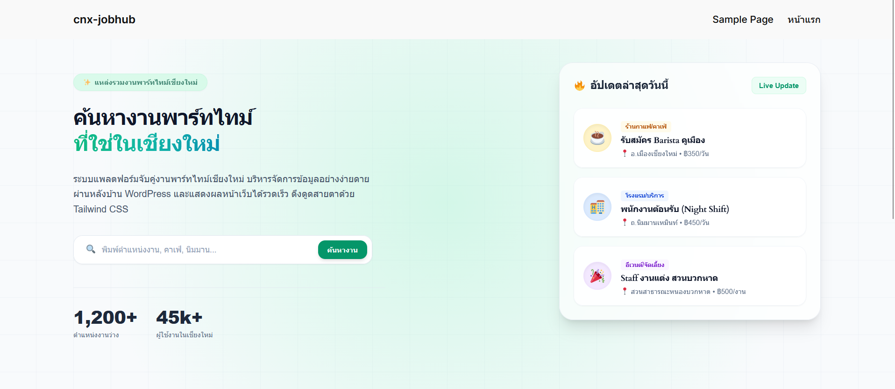
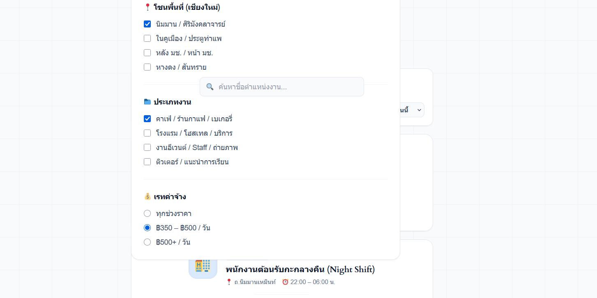
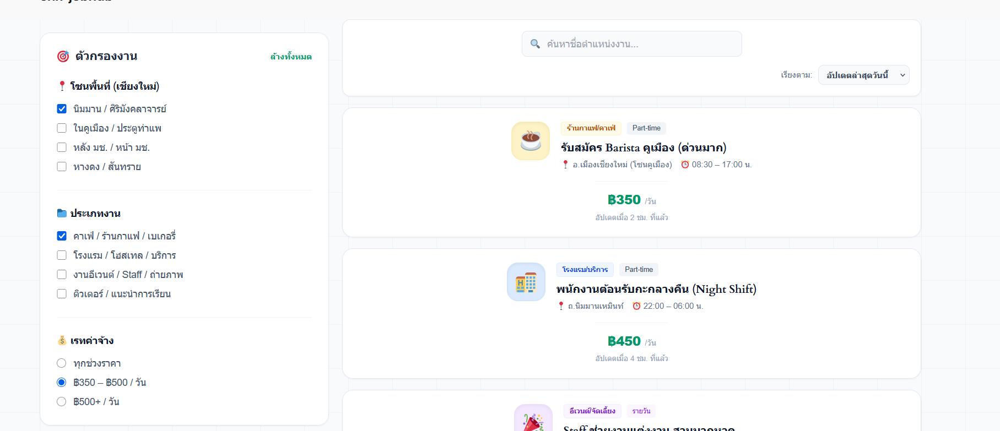
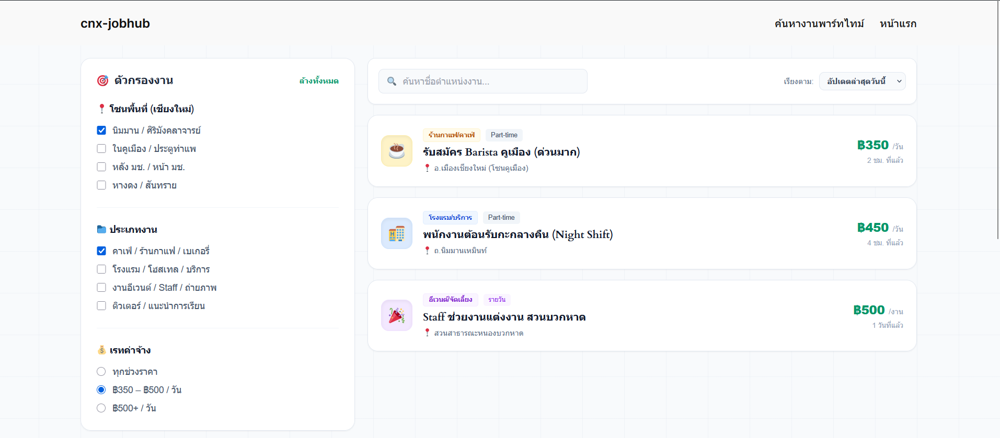
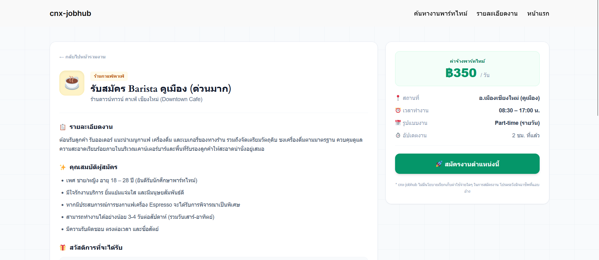
CNX-FlexWork | WordPress Part-Time Job Portal Prototype
WordPress, CMS Architecture, UI/UX Design
ออกแบบและพัฒนา High-fidelity Frontend Visual Prototype แพลตฟอร์มหางานพาร์ทไทม์ มุ่งเน้นไปที่ประสบการณ์ผู้ใช้งานกลุ่มคนหางานทั่วไป เพื่อการทดสอบผลิตภัณฑ์ที่รวดเร็วและรองรับ Responsive เต็มระบบ
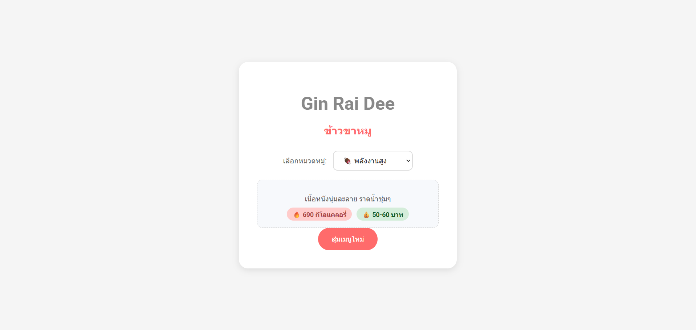
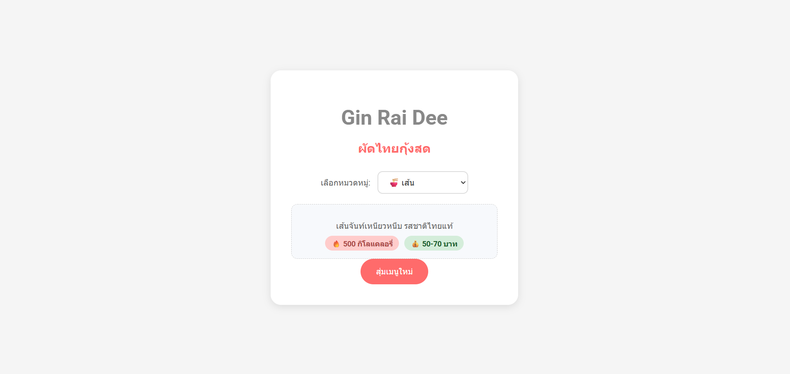
Gin Rai Dee | Food Random Web Application
React / JavaScript, Tailwind CSS, Git
เว็บแอปพลิเคชันแก้ไขปัญหาการเลือกเมนูอาหารประจำวันแบบ Interactive มีระบบกรองแยกประเภทอัจฉริยะ (เช่น ก๋วยเตี๋ยว, ข้าว) พร้อมแสดงรายละเอียด แคลอรี และช่วงราคาอย่างแม่นยำ
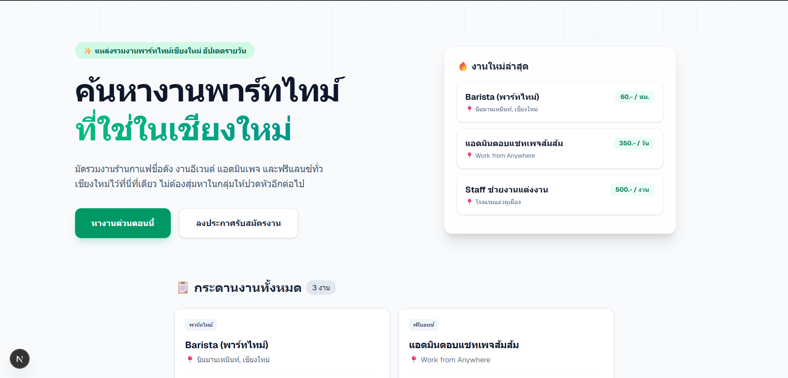
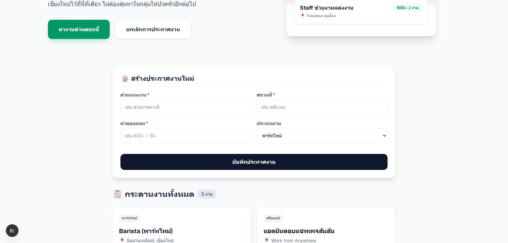
CNX-JobHub | Premier IT Job Board Platform
Next.js, TypeScript, Tailwind CSS, LocalStorage
บอร์ดประกาศหางานไอทีสำหรับชุมชนนักพัฒนาเชียงใหม่ ควบคุมระบบ State Management และการจัดการฐานข้อมูลฝั่ง Client-side แบบครบถ้วน (CRUD Operations) ผ่าน LocalStorage โดยไม่มีการรีโหลดหน้า
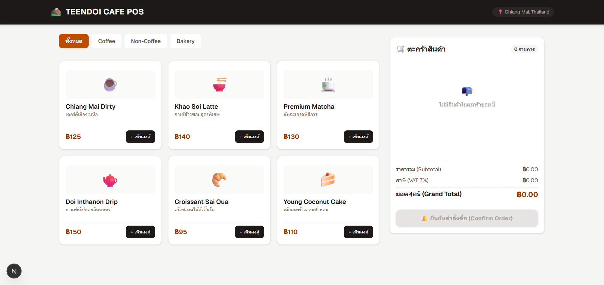
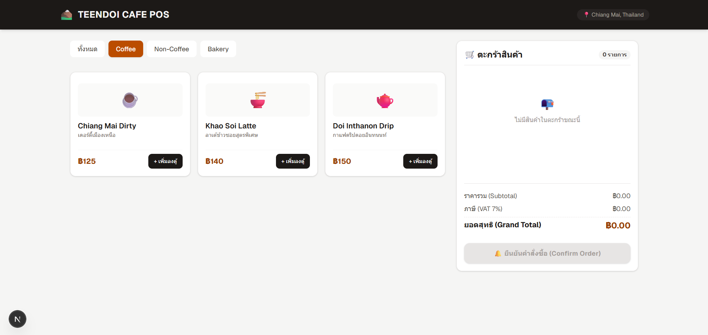
Chiang Mai Cafe POS | Point of Sale System
Next.js, TypeScript, Tailwind CSS
แอปพลิเคชันหน้าเดี่ยว (SPA) สำหรับบริหารจัดการออเดอร์ในร้านกาแฟ พัฒนาระบบตรรกะคำนวณข้อมูลที่ซับซ้อน เช่น การจัดการตะกร้าสินค้า อัปเดตปริมาณสินค้า และคำนวณราคารวม ภาษี VAT ไดนามิก
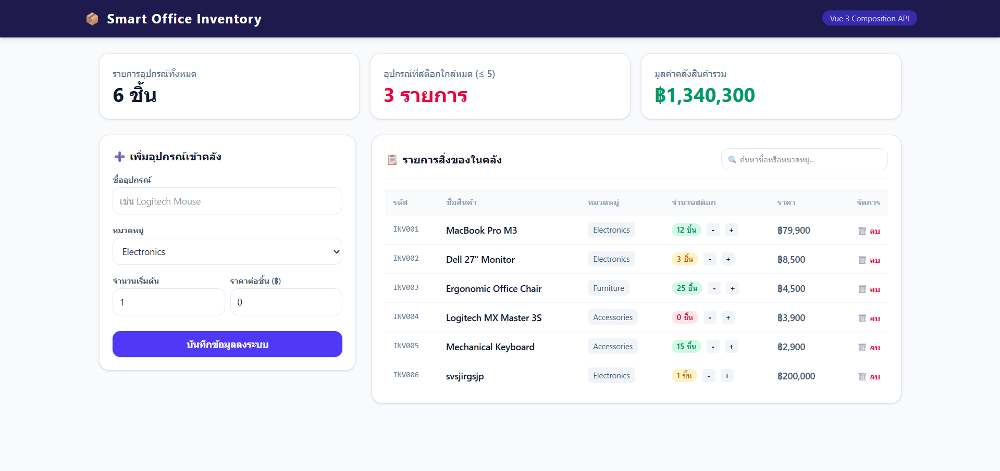
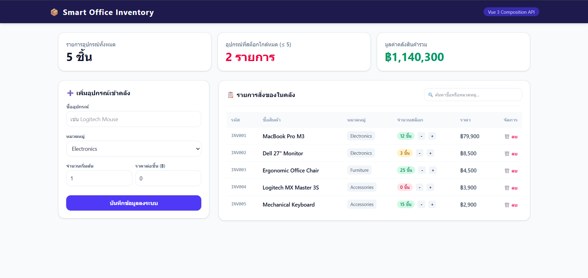
Smart Office Inventory | Asset Management Dashboard
Vue 3, Tailwind CSS v4, Vite
แดชบอร์ดตรวจสอบพัสดุและครุภัณฑ์อัจฉริยะ ประยุกต์ใช้ Vue 3 Reactivity ในการประมวลผลเมทริกซ์และสรุปยอดมูลค่าสินทรัพย์รวมทั้งหมด พร้อมระบบค้นหาเชิงลึกและการแจ้งเตือนคลังสินค้าต่ำ
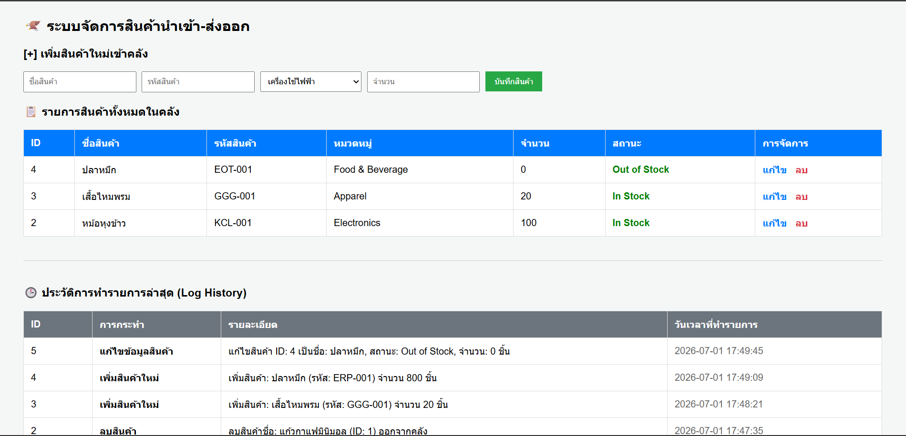
Mini Inventory Management System
HTML5, CSS3, PHP, MySQL, XAMPP
เว็บแอปพลิเคชันจัดการคลังสินค้าขนาดเล็ก เน้นการใช้งานจริง มีระบบลอจิก CRUD ควบคุมข้อมูลสินค้าเข้า-ออกอย่างแม่นยำ พร้อม UI ที่เรียบง่ายต่อการกรอกข้อมูลและตรวจสอบสต๊อก
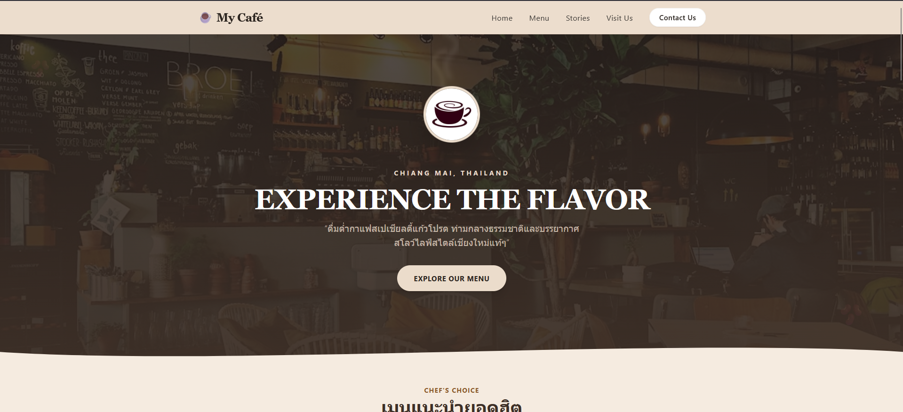
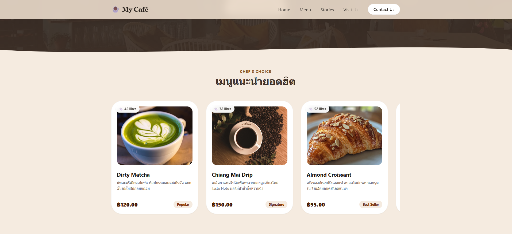
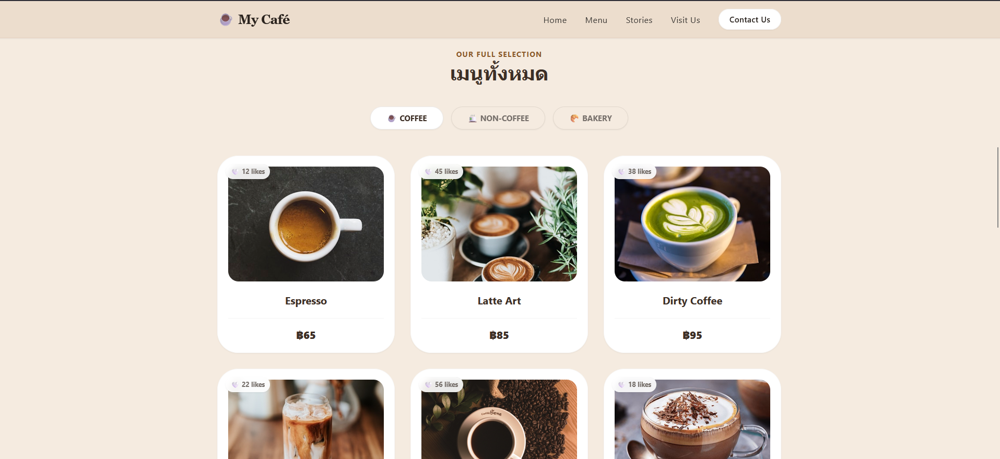
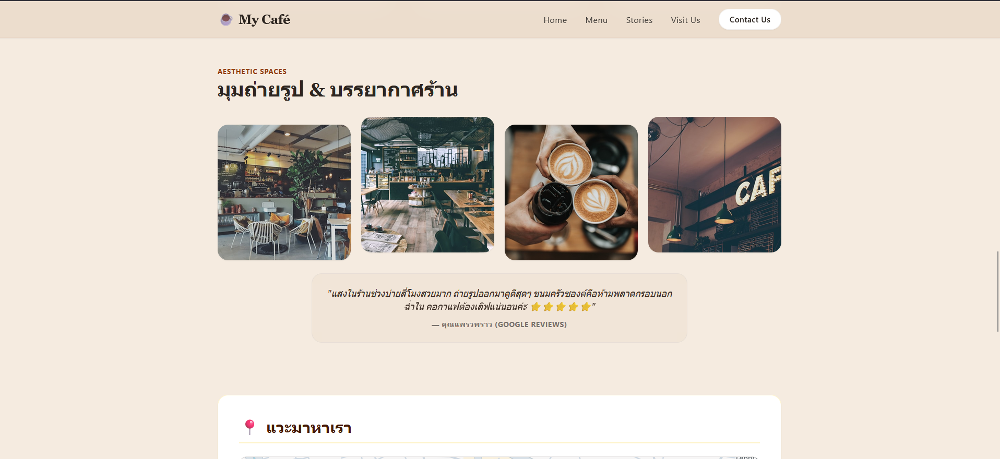
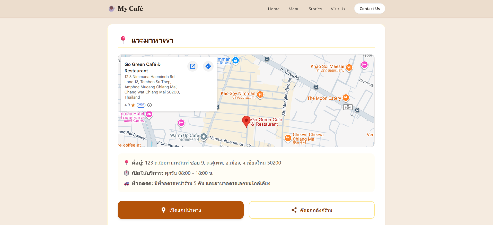
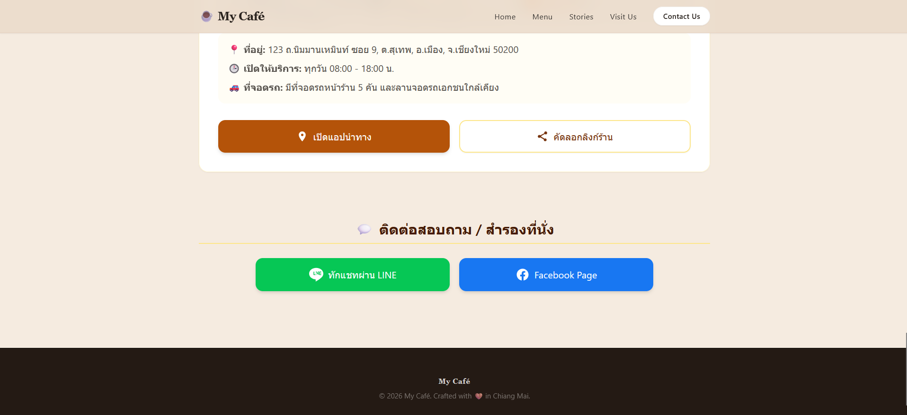
Modern Café Promotional Website
HTML, CSS, JavaScript, Tailwind CSS
หน้า Landing Page สำหรับร้านคาเฟ่เพื่อดึงดูดลูกค้า ออกแบบด้วยหลัก UI/UX Principles ที่ทันสมัย โชว์เมนูและแกลเลอรีภาพ พร้อมเชื่อมต่อ Google Maps และรองรับการแสดงผลทุกหน้าจอด้วย Tailwind CSS